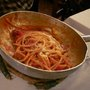

Places to eat in Rome
There is no such thing as Italian food. Cuisine across Italy is so regional, in fact, that you’ll see entirely different piatti (plates) from one city to the next — a variety that makes traveling and dining even more of a pleasure. Eating an area’s specialties not only connects you to the culture, it also helps ensure that you're eating fresher and more local, too.
| Restaurant | Type | Address | Hours |
|---|---|---|---|
| Taverna Trilussa  |
Roman | Trastevere,Via del Politeama 23, 00153 Rome, Italy |
24 hours |
| Life |
Wine Bars, Italian | Centro Storico,Via della Vite 28, 00187 Rome, Italy |
5am to 1 am |
| L’Emporio alla Pace |
Cafes,Bars | Centro Storico, Via della Pace 28, 00186 Rome, Italy | 7 am to 12 am |
Rome’s 6 Must-Eat Dishes
Rome, of course, is no different. Want to know what to order while in the capital city? Here are some of its most beloved dishes — and, just as importantly, where to find our favorite versions.
- Nonna Betta
- Cacio e Pepe
- Da Danilo
- Cesare al Casaletto
- Flavio al Velavevodetto
- Armando al Pantheon
Roman artichokes are world-famous; in fact, they’ve even been given protected-origin status (PGI, or Protected Geographical Indication) by the European Union. While you can find them steamed, stewed or thrown onto a pizza, one of their most satisfying treatments originated in Rome’s Jewish Ghetto, where they come fried to a lighter-than-air crisp. Today, you can find “Jewish-style artichokes” across Rome — but some restaurants make them far better than others.
This pasta dish couldn’t be simpler: pecorino Romano cheese and fresh black pepper are swirled with cooking water from the pasta to make it creamy (and then, obviously, swirled with the pasta — cooked al dente, of course — itself).
Another classic Roman pasta, this takes the pecorino Romano and fresh black pepper of the cacio e pepe but adds in guanciale (smoked pork jowl) and egg. Nothing else is added, especially not cream or peas, which means the dish is a fresher, lighter version of the comfort food you might know from back home.
This is Rome’s classic “red sauce,” made from San Marzano tomatoes, guanciale, white wine and pecorino Romano. (Some spots add onion, too.) It’s the perfect stick-to-your-ribs dish, but I’d be lying if I said it wasn’t one I dig into year-round.
Culinary traditions stemming from cucina povera, or “peasant cuisine,” can be found across Italy.
Wrap tender veal in prosciutto and sage, marinate it in white wine and fry it up. No wonder the name “saltimbocca” means “jump in your mouth” in Roman dialect. In general, Roman restaurants do their antipasti and primi better than their secondi — but this is one meat dish to be sure to try.